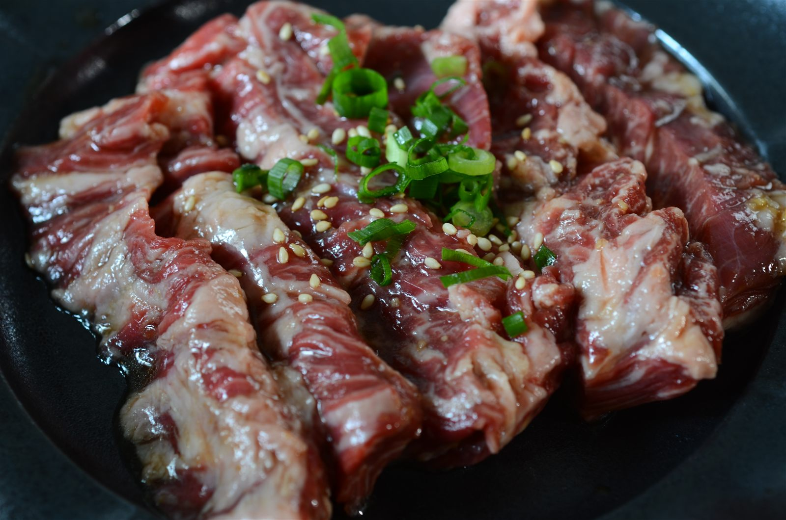
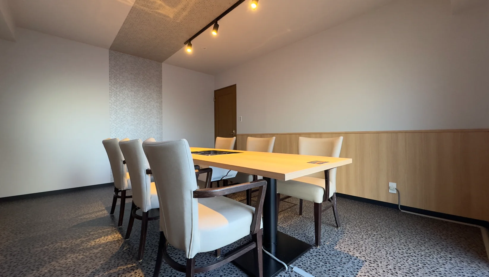

ハラミ
REGULAR
噛むほどに感じる、赤身の味。まずはこの一皿から。
￥910
NEWS
リニューアル記念
リニューアルを記念して、ホルモン全品を500円でご用意しています。驚きのコスパで、気軽に本格ホルモンをお楽しみください。※期間未定・予告なく終了する場合がございます。
HARAMI
日本の流通では、ハラミは内臓として扱われます。
どんな牛のものか、たどれることはまれです。
黒毛和牛と言い切れるハラミは、さらに少ない。
だから当店は、仕入れにこだわり抜いています。

REGULAR
噛むほどに感じる、赤身の味。まずはこの一皿から。
￥910
PREMIUM
仕入れにこだわり抜いた、鮮度と旨みの主役。当店いちばんのおすすめです。
￥2,200
SUPREME
柔らかさの中に、濃厚なお肉のうまみが凝縮。最上級の一皿です。
￥2,550
生鮮品のため、日により入荷のない格がございます。お目当てがお決まりの場合はご来店前にお電話ください。
OFF MENU
先代から受け継いだ、品書きに載らない品があります。
その日の仕入れで、出せるものが変わります。
お店で直接、ご確認ください。
OUR BEEF
SOURCING
その日いちばんの牛を、まとめて仕入れます。部位ごとに買い付けないので、よそでは見かけない珍しい部位も並びます。
WAGYU
銘柄より、味で選びます。脂が軽くて胃にもたれず、赤身そのものがおいしい国産和牛だけを仕入れています。
RARE CUTS
その日に出せる部位は店内のボードに書き出します。品書きに載らない肉こそ、お越しいただく理由です。
SINCE 1980
西友の裏手、路地の角。
駅から近いのに、人通りの落ち着くこの場所で、
1980年から変わらず焼肉を焼き続けています。
COURSE
平日限定
7 DISHES
￥3,200飲み放題付 ￥4,700
山王苑定番のお肉やホルモンをバランスよく網羅した、コスパ抜群のコース。各種ご宴会や普段使い、お仕事帰りの飲み会にもぴったりです。
火〜金曜のご提供・お時間120分。2〜4名様は当日店舗でのご注文も承ります（20:30まで。予約サイト経由は20:00受付終了）。5名様以上は前日21:00まで、10名様以上は3日前までにご予約ください。
飲み放題（1,500円）は生ビール・サワー・ハイボール・焼酎・お茶割・カシス・梅酒・日本酒（八海山）・ハウスワイン・マッコリ・ソフトドリンクをご用意しています。
要 前日予約
14 DISHES
￥6,580
選び抜いた食材を、職人が旨味を最大限引き出すよう丁寧に仕上げました。品数・ボリュームともにご満足いただける、当店渾身のコースです。
平日・週末ともに前日までのご予約が必要です（10名様以上はお電話でご確認ください）。飲み放題は平日1,500円・週末2,000円（生ビール含む）。
LUNCH
忙しいお仕事の合間に、旨い・安い・早い。
品数を最小限にしぼった、昼のメニューです。
SEATS

1F ─ COUNTER & TABLE
カウンター5席とテーブル4卓。炭の入った七輪を卓に置いて焼いていただきます。おひとりでも。
卓上七輪とガスロースターを使用しております。小さなお子様連れの際は火傷にご注意ください。
ACCESS
| 店名 | 焼肉山王苑 |
|---|---|
| 電話 | 03-3763-4129 |
| 住所 | 〒140-0013 東京都品川区南大井6-25-12 1F |
| 営業時間 | 火・水・木・金・土・日 17:00 – 22:30 （料理L.O. 22:00） |
| 定休日 | 月曜日 |
| ご予算 | 6,000円 – 8,000円 |
北口から（約2分） ローソンを左手に、駅を背にして直進。信号を越えて一つ目の路地を右へ。次の路地の左角、1階が当店です。
東口から（約3分） フレッシュネスバーガーと西友のあいだを直進。西友裏手の路地の向かい側です。
ご予約の変更・キャンセルは前日までにお電話ください。